LA IGLESIA MILITANTE
El siglo XII
Las fechas son clavos indispensables para colgar el tapiz de la historia. Ya conocida la fecha de 1066, hagamos uso de ella en tal sentido. Ningún edificio completo ha sobrevivido en Inglaterra del período sajón, y existen muy pocas iglesias de la época anterior en otras partes de Europa. Pero los normandos que desembarcaron en Inglaterra llevaron consigo un estilo arquitectónico ya desarrollado, que se conformó en Normandía y en otros lugares durante su generación. Los obispos y los nobles, que eran los nuevos señores feudales de Inglaterra, comenzaron pronto a ejercer su poder fundando abadías y monasterios. El estilo en que se erigieron esas construcciones se conoce con el nombre de estilo normando en Inglaterra, y estilo románico en el continente. Floreció durante más de un siglo después de la invasión normanda.
No es fácil imaginar hoy lo que significaba una iglesia para la gente de aquella época. Tan sólo en algunas antiguas villas de regiones agrícolas podemos vislumbrar algo de su importancia. La iglesia era a menudo el único edificio de piedra de los alrededores, la única estructura considerable en varios kilómetros a la redonda, y su campanario era un hito o señal para todos los que se acercaban desde lejos. En los domingos y durante los servicios divinos, todos los habitantes de la ciudad podían congregarse allí, y el contraste entre el elevado edificio con sus pinturas y sus tallas y las moradas humildes y primitivas en las que transcurrían las vidas de aquellas gentes debió ser abrumador. No es de extrañar que la comunidad entera se interesase en la construcción de estas iglesias y se enorgulleciera de su ornamentación. Hasta desde el punto de vista económico, la construcción de un monasterio, que exigía años, debió transformar a toda una ciudad. Extraer piedras de las canteras y transportarlas, levantar andamios adecuados, emplear artesanos ambulantes que traían consigo relatos de lejanos países, todo esto constituía un verdadero acontecimiento en días tan remotos.
La edad de las tinieblas no había borrado en modo alguno de su memoria el recuerdo de las primeras iglesias, las basílicas y las formas que utilizaron los romanos en sus construcciones. La planta, generalmente, era la misma: una nave central que conducía a un ábside o coro y dos o cuatro alas laterales. A veces, este simple plano se enriquecía con cierto número de adiciones. Algunos arquitectos preferían la idea de construir iglesias en forma de cruz y, así, agregaron lo que recibe el nombre de crucero entre el coro y la nave. La impresión general que producen estas iglesias normandas o románicas es, sin embargo, muy distinta de la de las antiguas basílicas. En las más primitivas de éstas se emplearon columnas clásicas que sostenían rectas cornisas. En las iglesias románicas y normandas hallamos por lo general arcos semicirculares que descansan sobre pilares macizos. La impresión de conjunto que estas iglesias producen, tanto desde dentro como desde fuera, es de compacta solidez. Hay en ellas escasa ornamentación, incluso escasos vanos, pero sí firmes y continuas paredes y torres, que nos recuerdan las fortalezas medievales (ilustración 111). Estos poderosos y casi retadores cúmulos de piedra erigidos por la Iglesia en tierras de campesinos y de guerreros que acababan de emanciparse de la forma de vida que habían odiado, parecen expresar la idea misma de la Iglesia militante, esto es, la idea de que aquí, sobre la tierra, misión de la Iglesia es combatir las fuerzas oscuras hasta que la hora del triunfo suene en el día del juicio final (ilustración 112).
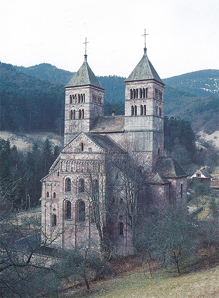
111 Iglesia benedictina de Murbach, Alsacia, h. 1160. Iglesia románica.
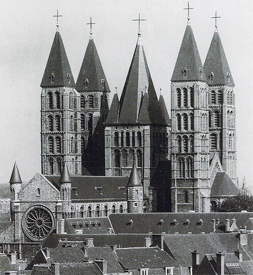
112 Catedral de Tournai, Bélgica, h. 1171-1213. La iglesia en la ciudad medieval.
Hubo un problema relacionado con la construcción de iglesias que preocupó a todos los buenos arquitectos. Fue la tarea de dar a esos impresionantes edificios de piedra el digno remate de un techo también pétreo. Los techos de madera, que habían sido los usuales en las basílicas, carecían de dignidad y habían sido peligrosos por incendiarse fácilmente. El arte romano de abovedar tan espaciosas construcciones requería gran cantidad de conocimientos técnicos y de cálculos que, en gran parte, se habían perdido. Por ello, los siglos XI y XII se convirtieron en un período de experimentos incesantes. No era asunto de poca monta cubrir todo el vano de la nave principal con una bóveda. La solución más sencilla se diría que consistía en salvar la distancia a la manera de un puente sobre un río. Se construían enormes pilares a ambos lados para sostener las vigas de esos puentes. Pero pronto se vio claro que una bóveda de esta suerte tenía que quedar firmemente unida si no se quería que se hundiese, ya que el peso de las piedras era extremadamente grande. Para soportar esos pesos enormes, las paredes y los pilares tenían que ser construidos más fuertes y macizos todavía. Se necesitaban grandes masas de piedra para esas primitivas bóvedas de túnel o de cañón.
Por ello, los arquitectos normandos comenzaron a intentar otro sistema. Vieron que realmente no era necesario hacer tan pesado todo el techo, pues bastaba con tener un cierto número de sólidas vigas que cubriesen la distancia para rellenar luego los intersticios con materiales más ligeros. Se advirtió que el mejor método para proceder así era extender las vigas o nervios cruzados entre los pilares, rellenando después los intersticios triangulares resultantes. Esta idea, que prontamente revolucionaría los sistemas de edificación, puede ser seguida retrocediendo hasta la catedral normanda de Durham (ilustración 114), aunque el arquitecto que planeó la primera bóveda con nervios para su sólido recinto interior (ilustración 113) apenas se dio cuenta de sus posibilidades técnicas.
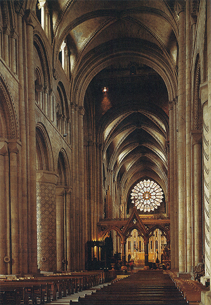
113, 114 Nave y pórtico oeste de la catedral de Durham, 1093-1128. Catedral normanda.
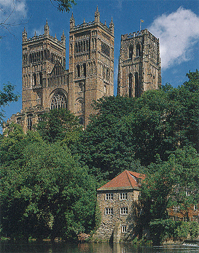
Donde se empezaron a decorar las iglesias con esculturas fue en Francia. La palabra actual decorar es un tanto engañosa. Todo cuanto perteneciera a la Iglesia tenía su función específica y debía responder a una idea concreta relacionada con el adoctrinamiento de la fe. El pórtico de finales del siglo XII de la iglesia de St.-Trophime en Arlés (sur de Francia) es uno de los ejemplos más completos de este estilo (ilustración 115). Su forma recuerda el principio del arco de triunfo romano (ilustración 74). Encima del dintel —llamado tímpano (ilustración 116)— muestra al Cristo en gloria, rodeado de los símbolos de los cuatro evangelistas. Esos símbolos, el león para san Marcos, el ángel para san Mateo, el toro para san Lucas y el águila para san Juan, proceden de la Biblia. En el Antiguo Testamento leemos la visión de Ezequiel (1, 4-12), en la que se describe el trono del Dios sostenido por cuatro criaturas con las cabezas de un hombre, un león, un toro y un águila.
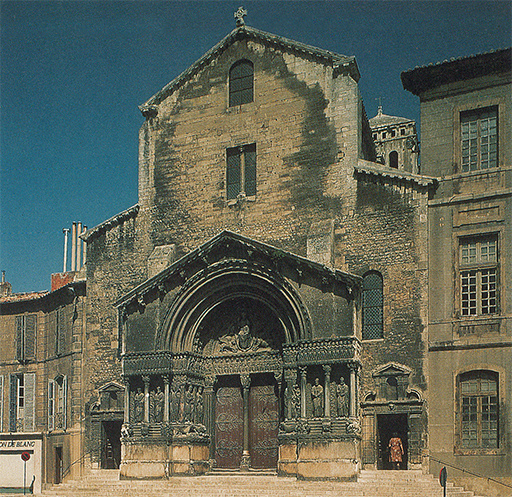
115 Fachada de la iglesia de St-Trophime, Arlés, h. 1180.
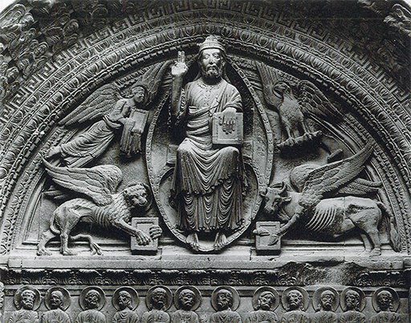
116 El Cristo en gloria. Detalle de la ilustración 115.
Los teólogos cristianos creyeron que este pasaje se refería a los cuatro evangelistas, y que una visión semejante era oportuna a la entrada de una iglesia. En la parte baja del dintel vemos doce figuras sentadas, los doce apóstoles, y podemos distinguir, a la izquierda del Cristo, una hilera de personajes desnudos y encadenados: son los que han perdido sus almas y son conducidos al infierno. A la derecha del Cristo vemos a los bienaventurados con sus rostros vueltos hacia él, en glorificación eterna. Debajo observamos las rígidas figuras de los santos, cada uno de ellos señalado por su emblema, recordando a los fieles que pueden ser sus intercesores cuando sus almas se encuentren delante del último juez. De este modo, las enseñanzas de la Iglesia acerca del destino final de las vidas humanas, aquí abajo, tomaban cuerpo en esas esculturas sobre el pórtico de una iglesia. Esas imágenes vivían en el espíritu de las gentes con mayor intensidad que las palabras del sermón pronunciado por el cura. Un poeta francés de finales del medievo, François Villon, ha descrito este efecto en los emotivos versos que escribió pensando en su madre:
Soy una mujer, vieja y pobre,
ignorante de todo; no puedo leer;
en la iglesia de mi pueblo me muestran
un Paraíso pintado, con arpas,
y un Infierno, en el que hierven las almas de los condenados;
uno me alegra, me horroriza el otro.
No debemos esperar que tales esculturas parezcan tan naturales, ágiles y graciosas como las obras clásicas. Son más intensas, por su maciza solemnidad. Es mucho más fácil saber de un golpe de vista qué representan, y se ajustan mucho mejor a la grandiosidad del edificio.
117 Candelabro de Gloucester, h. 1104-1113. Bronce dorado, 58,4 cm de altura; Victoria and Albert Museum, Londres.
Cada detalle, en el interior de la iglesia, era cuidadosamente estudiado en relación con su mensaje y su sentido. La ilustración 117 presenta un candelabro hecho para la catedral de Gloucester hacia 1110. Los monstruos y dragones entrelazados de que se compone nos recuerdan las obras de la edad de las tinieblas (ilustraciones 101 y 103). Pero ahora se confiere un sentido más definido a esas formas misteriosas. Una inscripción latina en torno a su remate dice aproximadamente: «Este portador de luz es obra de la virtud; con su brillo predica la doctrina, para que el hombre no se entenebrezca en el vicio.» Y, en efecto, cuando penetramos con nuestros ojos en la selva de extrañas criaturas, no sólo encontramos otra vez (en la protuberancia del centro) los símbolos de los evangelistas que representan la doctrina, sino también figuras de hombres desnudos. Como Laocoonte y sus hijos (ilustración 69), son asaltados por monstruos y serpientes; pero su lucha no es desesperada. «La luz que brilla en las sombras» puede hacerles triunfar sobre los poderes maléficos.
La pila bautismal de una iglesia en Lieja (Bélgica), labrada hacia 1113, nos proporciona otro ejemplo de la intervención de los teólogos aconsejando a los artistas (ilustración 118). Es de bronce y tiene en la parte central un relieve con el bautismo del Cristo, tema el más adecuado para una pila bautismal. Contiene inscripciones latinas que explican el sentido de cada figura; por ejemplo, leemos Angelis ministrantes (ministros angélicos) sobre las dos figuras que aguardan en la orilla del río Jordán para recibir al Cristo. Pero no solamente estas inscripciones subrayan la importancia conferida a la significación de cada detalle. También al conjunto de la pila se le ha dado un sentido semejante. Hasta los toros sobre los que descansa no están ahí simplemente con fines ornamentales o decorativos. Leemos en la Biblia (2 Crónicas, 4) cómo el rey Salomón contrató a un hábil artesano de Tiro, en Fenicia, experto en la fundición del bronce. Entre las diferentes cosas que le encargó destinadas al Templo de Jerusalén, la Biblia describe:
Hizo el Mar de metal fundido, de diez codos de borde a borde. Era enteramente redondo… Se apoyaba sobre doce bueyes; tres mirando al norte, tres mirando al oeste, tres mirando al sur y tres mirando al este. El Mar estaba sobre ellos, quedando sus partes traseras hacia el interior.
Este modelo sagrado fue, por consiguiente, el que el artista de Lieja, que también era gran experto en la fundición, se vio obligado a tener presente dos mil años o más después de la época de Salomón.
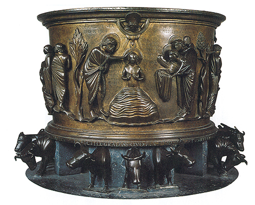
118 Reiner van Huy, Pila bautismal, 1107-1118. Latón, 87 cm de altura; iglesia de St.-Barthélemy, Lieja.
Las formas empleadas por el artista para las imágenes del Cristo, de los ángeles y de san Juan Bautista parecen más naturales y, al propio tiempo, más serenas y majestuosas que las de las puertas de bronce de la catedral de Hildesheim (ilustración 108). Recordemos que el siglo XII es el de las cruzadas. Existía por consiguiente un contacto mayor que antes con el arte de Bizancio, y muchos artistas de ese siglo trataron de imitar y de emular las majestuosas imágenes sagradas de la Iglesia de Oriente (ilustraciones 88 y 89).
En ninguna otra época, en efecto, se aproximó tanto el arte europeo a estos ideales del arte oriental como en la plenitud del estilo románico. Hemos visto la disposición rígida y solemne de las esculturas de Arlés (ilustraciones 115 y 116), y observamos el mismo espíritu en muchos manuscritos iluminados del siglo XII. La ilustración 119, por ejemplo, representa la anunciación. Parece casi tan rígida e inexpresiva como un relieve egipcio. La Virgen está vista de frente, con las manos levantadas en actitud de sorpresa, mientras la paloma del Espíritu Santo desciende sobre ella. El ángel está visto de medio perfil, con su mano derecha extendida en un ademán que en el arte del medievo significa el acto de hablar. Si al contemplar una página semejante esperamos una vívida ilustración de una escena real, experimentamos un desencanto. Pero si recordamos una vez más que el artista no se proponía una imitación de formas naturales, sino más bien una distribución de símbolos sagrados tradicionales, todos los cuales eran necesarios para ilustrar el misterio de la anunciación, ya no echaremos en falta lo que nunca se propuso ofrecernos.
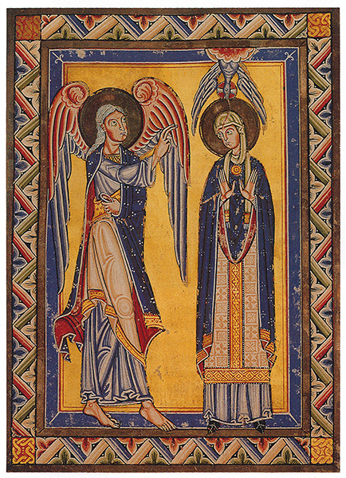
119 La anunciación, h. 1150. De un incunable suabo; Biblioteca Comarcal de Württemberg, Stuttgart.
Debemos darnos cuenta de cuán grandes eran las posibilidades que se abrían ante los artistas tan pronto como, decisivamente, descartaban toda ambición de representar las cosas tal como las vemos. La ilustración 120 ofrece una página de un calendario destinado a un monasterio alemán. Señala las principales festividades de los santos que tenían que ser celebradas en el mes de octubre, pero, a diferencia de nuestros almanaques, no las señala solamente con palabras sino también por medio de ilustraciones. En el centro, debajo de los arcos, vemos a san Vilimaro, el sacerdote, y a san Gall con el báculo de obispo y un compañero que lleva la impedimenta de un misionero. Los curiosos dibujos de las partes superior e inferior ilustran la narración de los dos martirios evocados en octubre. Posteriormente, cuando el arte volvió a la pormenorizada representación de la naturaleza, tan crueles escenas eran a menudo pintadas con gran profusión de detalles horribles. Nuestro artista era capaz de soslayar todo esto. Para evocarnos a san Gereón y a sus compañeros, cuyas cabezas fueron cortadas y echadas a un pozo, distribuyó los troncos descabezados dentro de un claro círculo en torno al pozo. Santa Úrsula, quien, según la leyenda, fue martirizada en unión de sus once mil vírgenes por los verdugos, aparece en un trono, literalmente rodeada por sus seguidoras. Un desagradable salvaje, con arco y flechas, y un hombre blandiendo su espada son situados a los lados y amenazan a la santa. Podemos leer el asunto en la página sin vernos obligados a representarnos cómo pudo producirse. Y apreciar cómo el artista podía prescindir de cualquier ilusión espacial o de cualquier acción dramática, cómo podía distribuir sus figuras y sus formas de acuerdo con líneas puramente ornamentales. La pintura se hallaba realmente en camino de convertirse en una forma de escribir mediante imágenes; pero este retorno a métodos de representación más simplificados confirió al artista del medievo una nueva libertad para hacer experiencias con más complejas formas de composición (com-posición = poner junto). Sin esos métodos, las enseñanzas de la Iglesia no habrían podido ser traducidas nunca a formas visibles.
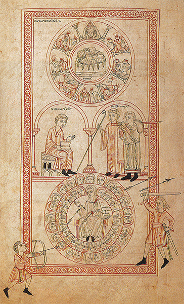
120 Santos Gereón, Vilimaro, Gall y el martirio de santa Úrsula con sus 11.000 vírgenes, 1137-1147. De un calendario manuscrito; Biblioteca Comarcal de Württemberg, Stuttgart.
Y lo mismo que con las formas sucede con los colores. Dado que los artistas ya no se sentían obligados a estudiar e imitar las gradaciones reales de las manchas que aparecen en la naturaleza, pudieron elegir libremente cualquier color que les gustara para sus ilustraciones. El oro brillante y los luminosos azules de sus obras de orfebrería, los colores intensos de sus libros iluminados, el rojo encendido y los verdes profundos de sus vidrieras (ilustración 121) muestran que esos maestros hicieron buen uso de su independización de la naturaleza. El verse libres de la necesidad de imitar el mundo de las cosas visibles fue lo que les permitió transmitir la idea de lo sobrenatural.
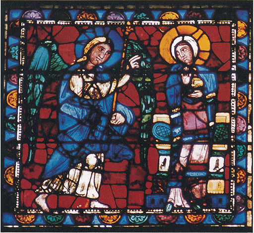
121 La anunciación, mediados del siglo XII. Vidriera; catedral de Chartres.
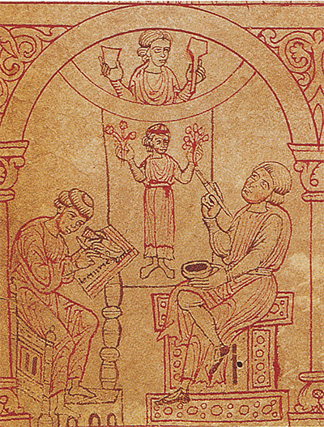
Artistas trabajando en un manuscrito y en una pintura sobre tabla, h. 1200. Del libro de copias del monasterio de Reun; Biblioteca Nacional de Austria, Viena.